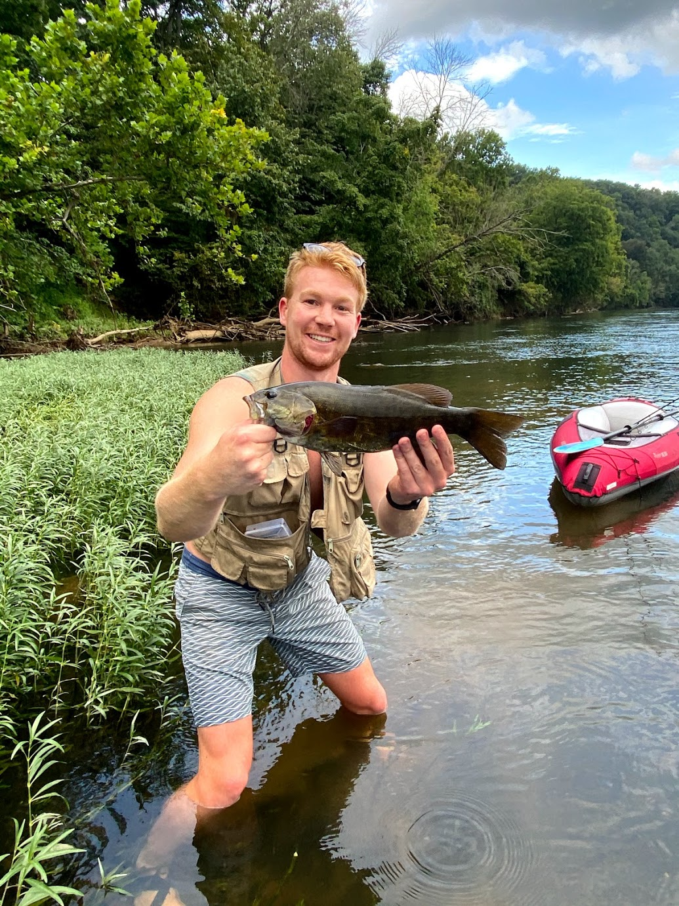
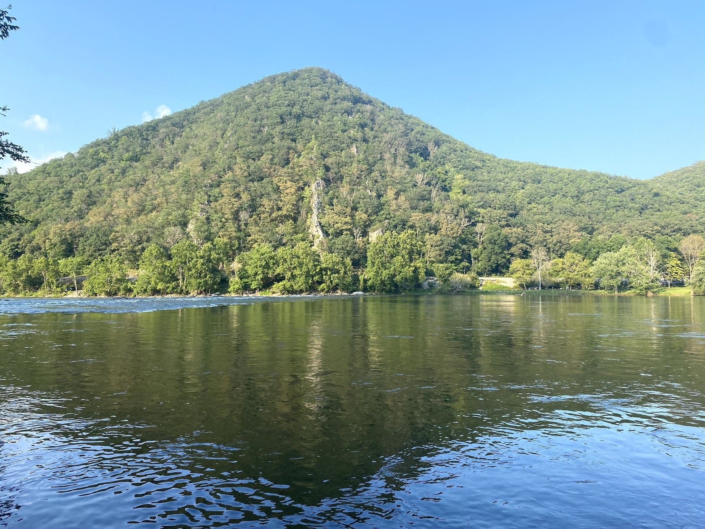
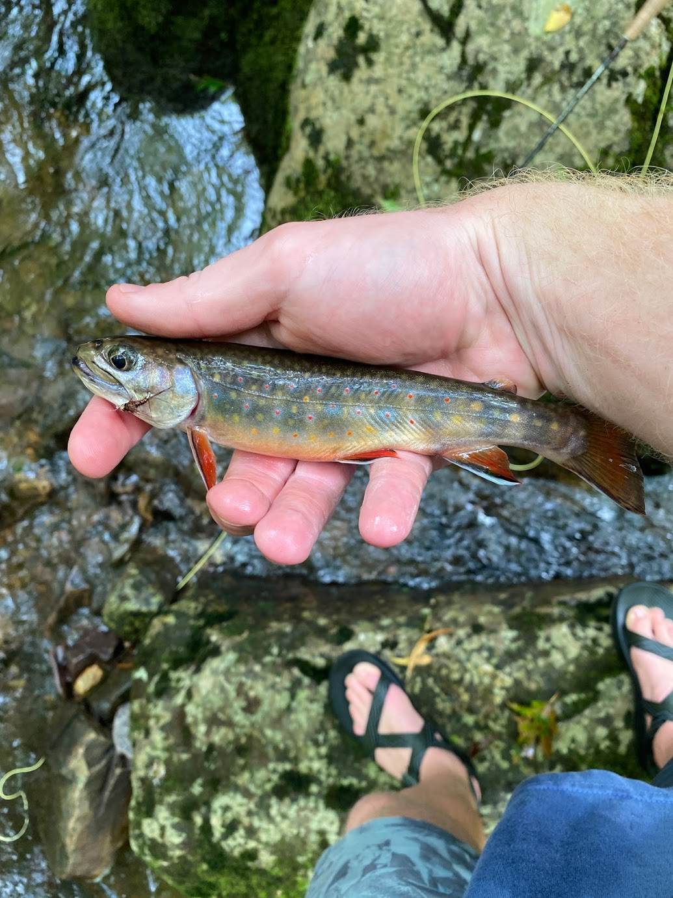
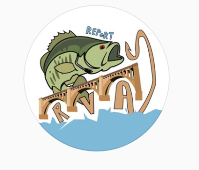

Fishing in Southwest Virginia
Here is a picture of a smallmouth I caught last weekend with our fellow classmate, Chris!
Smallmouth fishing is excellent here on the nearby New River. The river is the third oldest in the world and is home to a plentifull population of smallmouth, musky and even walleye!
I love floating down the river and casting along the banks to catch these awesome and aggressive fish!
Smallmouth love to hide behind rocks near the rapids and wait for a bug or crawfish to pass by. I often paddle straight to the rapids and stand where I am in position to score a giant!
I also enjoy other types of fishing such as trout fishing and largemouth bass fishing!
Southwest Virginia provides excellent trout fishing, as the temperatures remain cool enough to sustain a trout population! The Cascades waterfall and Little Stony Creek-- which flows into it--provide great opportunities to go Brook trout fishing.
Where My Passion All Started
Before I was even 5 years old, I was casting a fishing rod with my Dad. I grew up fishing the James River and local ponds in my neighborhood. Occasionally, my brothers, Dad and I would head to the Shenendoah River to catch smallmout. Since growing up, I have fished at least two times a week and now run a social media account called @RVAFISHREPORT to help keep the Richmond fishing community updated on the latest river conditions. Feel free to check out my account on Instagram.
